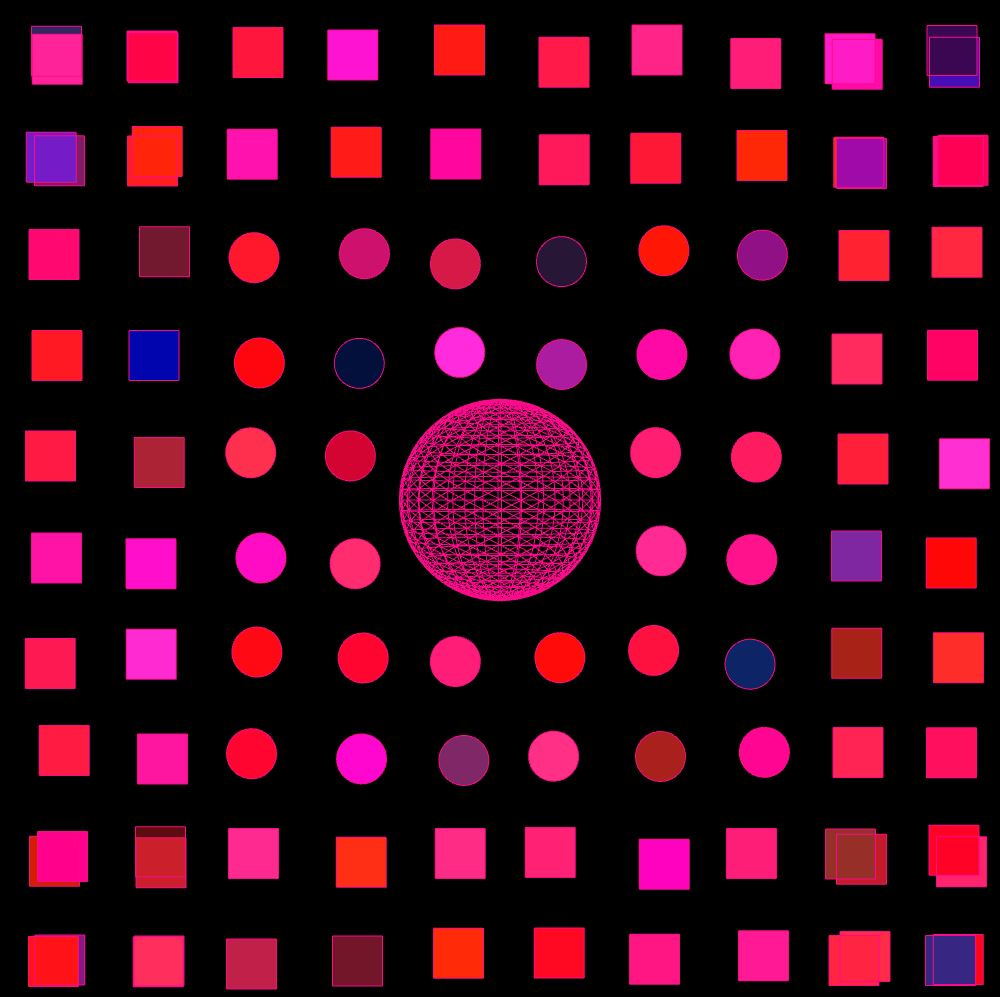

I am an 18 years old computer science student at City University of London in my first year and in this page I will be showing you the different projects I have been working on and I have created. Before City I have been doing some web development and also I have been making some little programs using Visual Basic. Aditionally I am very interested in working in front-end Web Development and I am very passionate about learning new skils and improving my knowledge about the industry.

Project name: The Random Party ThemeThis is my first project that i have developed in my time in University and this project was made during the first two weeks of bootcamp. This is a Processing project is very simple and shows my understanding in loops, randomness, and sound and here is what it does: The project is a background party program which gives a mood and theme to a party by playing a song in the background while shapes are changing their size and color randomly and additionaly there is a sphere spining which adds to the party theme. I achieved this by using for loops which allow all the rectangles and circles to be positioned correctly and additionally it allows them to change their size randomnly every second. Check out the code on Github: https://github.com/Madzharovv/adbt177 |
 |